Justin Murillo - CMPM 169
About Me
Tell us about yourself. Add photos. Customize this. Go crazy.
*This site is a work-in-progress*
Vector Art, Animation & Interactivity
Noise Flow Field
Generative Methods
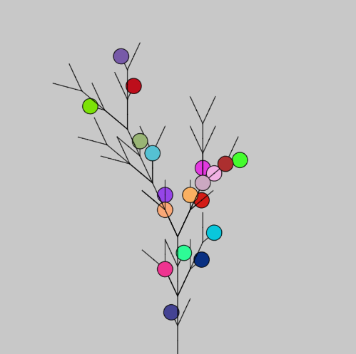 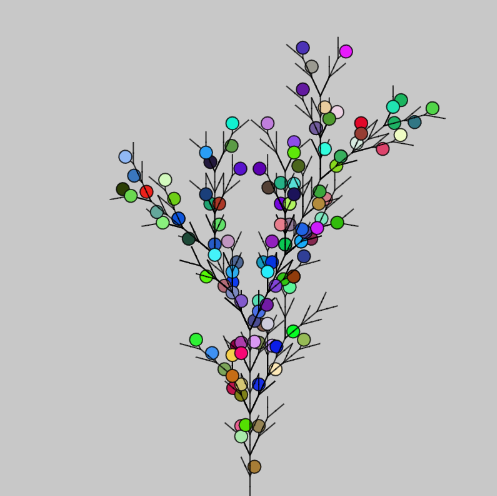 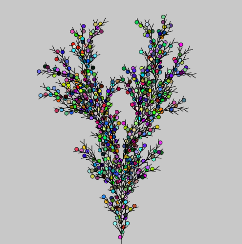
L-Systems - Fractal Tree
Images, Video & Sound Art
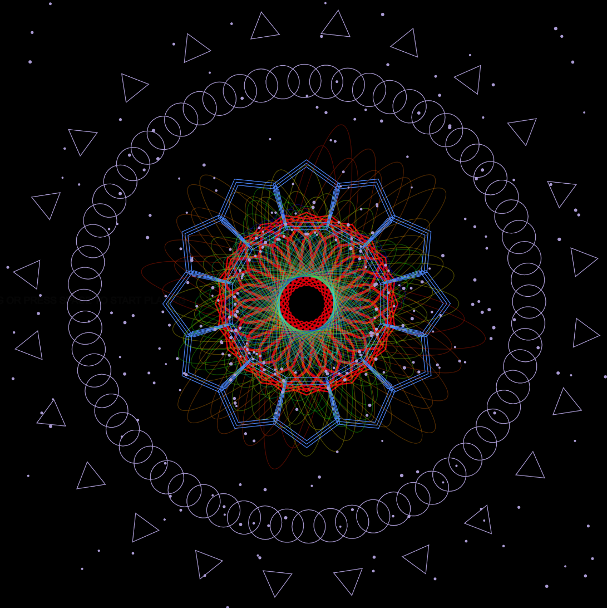 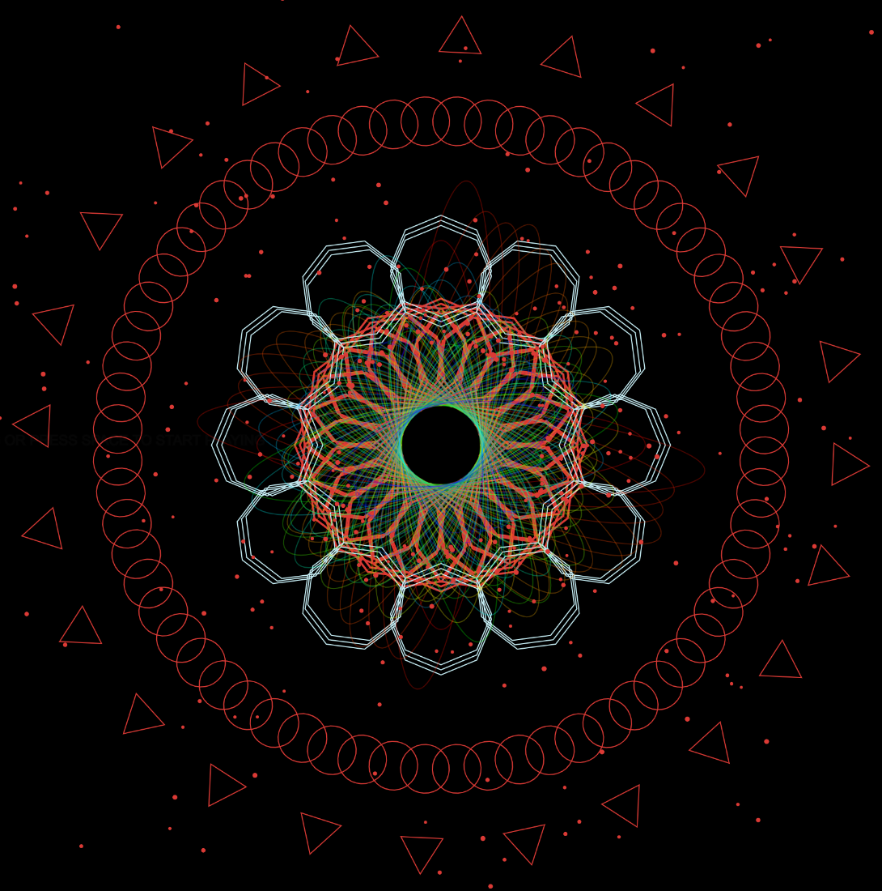 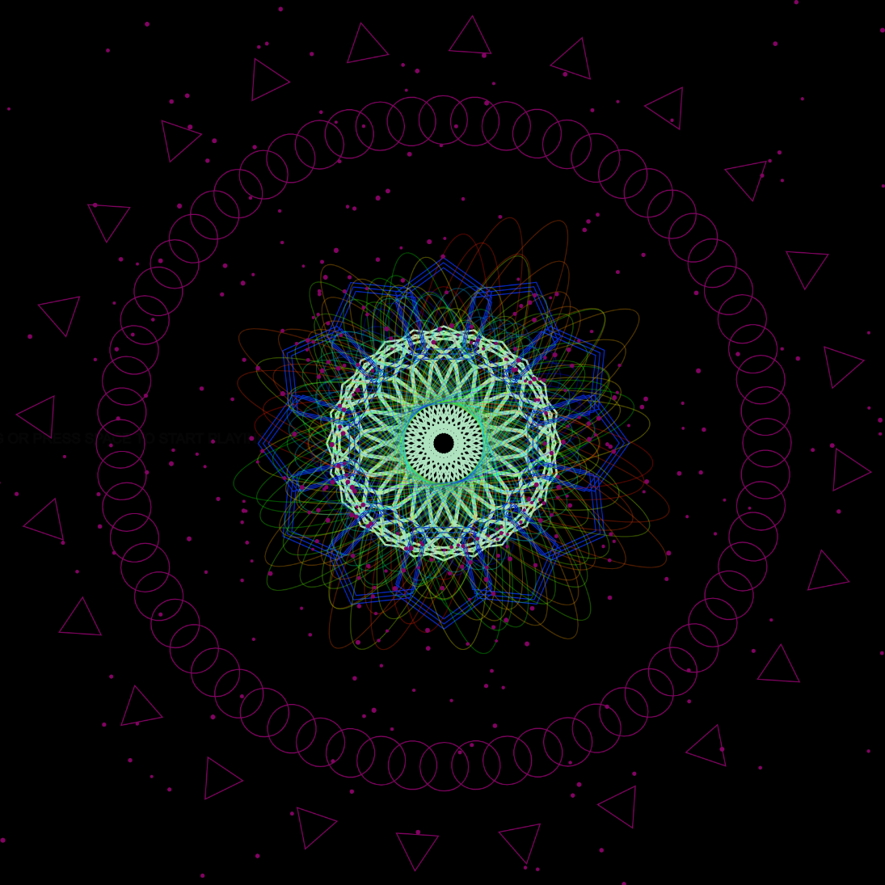
Audio Visualizer
Grammars & Text Art
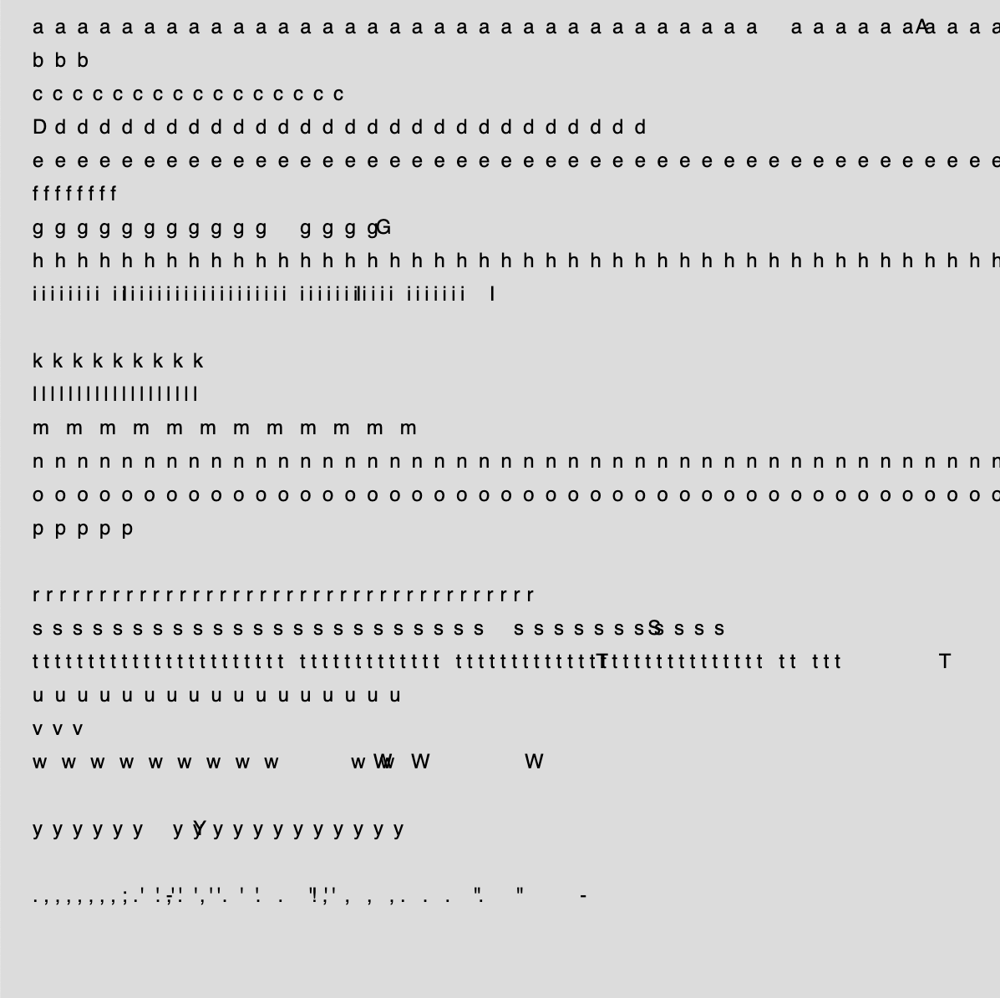 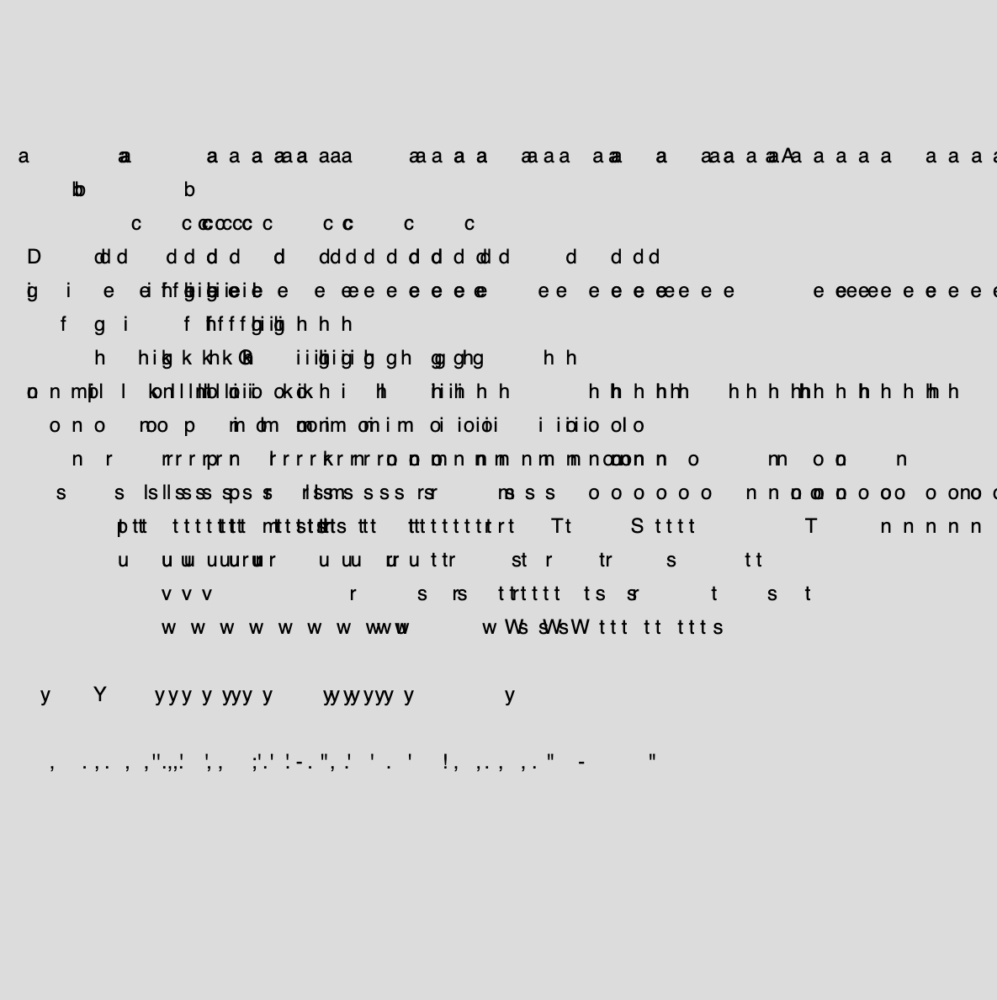 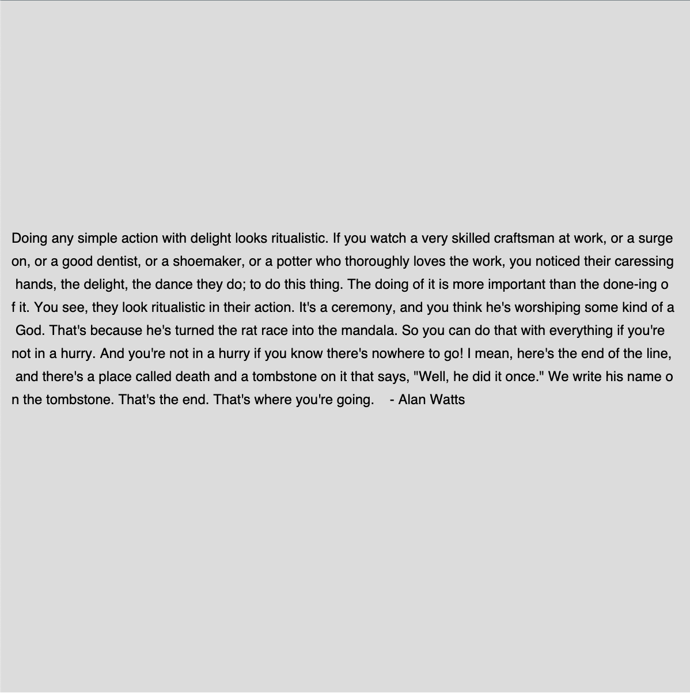
Radix Art
Data Visualization & Networking
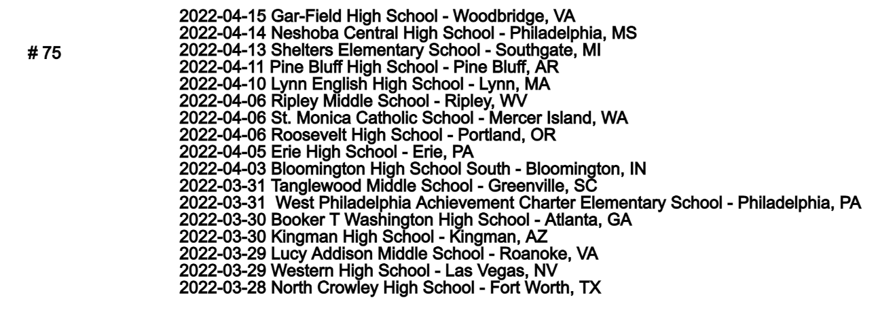 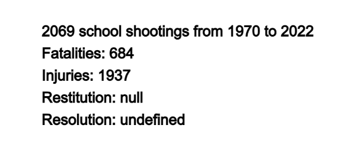
Data Visualization - School Shootings Since 1970